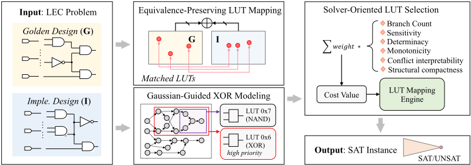
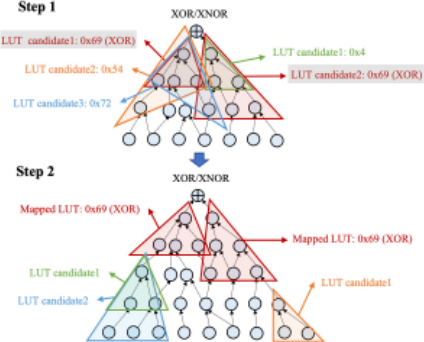
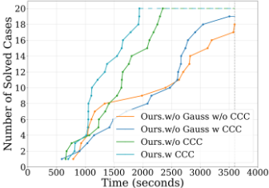
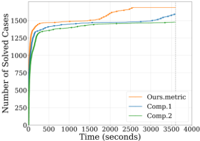

Miter-Aware LUT Mapping: Aligning Structure and Solvability for Efficient Logic Equivalence Checking
Miter 感知的 LUT 映射：面向高效逻辑等效性检查（LEC）的结构对齐与可解性协同
简介
逻辑等效性检查（LEC）是硬件验证的基础任务，但综合引起的结构扰动与 XOR 密集区域会显著拖慢 SAT 求解。论文主张 miter 的建模方式与求解器本身同等重要，提出 miter 感知的 LUT 映射框架：以等价保持映射在电路级对齐 golden 与实现网表的结构对应点，用 GF(2) 高斯消元发现的仿射关系显式重构 XOR LUT，并按分支效率、传播强度、冲突可解释性与结构紧凑度四项求解器友好度指标选择 LUT。实验显示该框架在多个 SAT 求解器上最高降低 92.1% 求解时间，与 ABC cec 引擎结合仍有 66.49% PAR2 收益，可作为 pre-CNF 优化层无缝插入现有 LEC 流程。对团队综合后签核、ECO 与跨工艺移植中的 LEC 环节有直接提速价值。
问题
传统 LEC 将 golden 设计与实现网表在比特级连接成扁平 miter 后交给 SAT 求解器，面临两大瓶颈：一是逻辑综合（rewriting、resubstitution、decomposition）扰动逻辑锥、掩盖两侧可匹配的内部等价点，抑制求解器内的功能合并简化；二是算术/密码类模块中 XOR 密集区域的 CNF 编码子句多、单元传播弱，使 CDCL 求解器性能退化。已有预处理工作仅在扁平 miter 上操作，忽视了 golden 与实现两侧之间的跨设计结构关联。
方法
在 SAT 求解前重构 miter 表示，构建 LUT 化的 miter 而非扁平网表，包含三个组件：(1) 等价保持 LUT 映射——以主输出附近的 XOR/XNOR 结构为对齐锚点，按拓扑深度、扇入/扇出数量与即时逻辑锥功能 hash 的启发式相似度递归配对两侧 LUT，使等价点作为 LUT 输入/输出边界保留在 CNF 中供求解器利用；(2) Gaussian 引导的 XOR 建模——在 AIG 中检测 XOR 关系并在 GF(2) 上做高斯消元，将发现的非平凡仿射关系实例化为独立 XOR LUT，保持参与变量的可见性与语义关联；(3) 求解器导向 LUT 选择——用分支效率、传播强度、冲突可解释性、结构紧凑度四项指标（离线预计算并缓存，约 5 秒）加权评估 LUT，权重经贝叶斯优化在小验证集上调优；LUT 限制为 2/3/4 输入。整体作为插件式 pre-CNF 优化层插入标准 miter-based LEC 流程，基于 ABC 与 Mockturtle 定制 cost-driven mapper 实现。
关键结果
完整框架在多个 state-of-the-art SAT 求解器上最高降低 92.1% 求解时间，相对基线 PAR2 平均提升 83.3%
CaDiCaL 上 PAR2 从 856.6 降至 67.4（近一个数量级）；Kissat 与 CaDiCaL 分别降低 91.4% 与 92.1%；与 ABC cec 高级 LEC 引擎结合仍降低 66.49% PAR2
消融实验：miter 感知映射单独降低运行时间 62.5%，Gaussian 引导 XOR 建模单独降低 36.8%
20 个由 32×32 乘法器构造的 XOR 密集实例：本方法全部在 2,000 秒内解出；去掉 Gaussian 建模后 2,000 秒仅解出 7 个、3,600 秒解出 19 个；Ours.w CCC 相对 Ours.w/o Gauss w CCC 平均加速 36.8%
求解器导向 LUT 选择指标单独启用时，比 Comp.1 在 3,600 秒内多解 5.5% 实例，整体平均加速 34.1%
Gaussian 引导 XOR 建模在全数据集平均降低 5.3% PAR2；公式化开销（LUT 映射运行时间）占 PAR2 不到 10%，指标离线预计算仅需 5 秒
创新点
区别于近期将 LUT 映射用于单电路 SAT 问题的工作（[33,37]），本文核心贡献是对 golden 与实现电路进行联合映射，显式保留并恢复被综合掩盖的内部等价点——这是等效性检查特有的挑战；同时将映射优化目标从'结构紧凑'升级为'求解器友好'，统一了 miter 感知映射、代数化简与求解器导向 LUT 选择三个环节；方法与 CNF 级简化技术（如 Clausal Congruence Closure）互补，可作为插件式 pre-CNF 优化层与现有 LEC 工具（如 ABC cec）协同工作。
团队参考意义
相关度级别：high
命中能力域：2.5 形式验证与等效性检查 | 2.2 RTL 设计与实现
理由：LEC/SEC 是团队 2.5 域的核心技术，也是 2.2 域中 ECO、网表 rerun 与跨工艺移植流程的必要签核环节。论文直接针对 LEC 的求解效率瓶颈提出建模层优化，且以 pre-CNF 优化层形式与现有 LEC 工具兼容，属于可直接借鉴的等效性检查加速技术。团队 IP 交付中综合后/ECO 后的大规模网表等效性检查，以及含 XOR 密集算术/编码逻辑的数据通路模块验证，均可能从中受益。
建议动作：深入精读并做内部分享
中文全文
arXiv:2607.07164v1 [cs.AR] 2026年7月8日
Miter-Aware LUT Mapping: Aligning Structure and Solvability for Efficient Logic Equivalence Checking
Jiaying Zhu 1 , Zhengyuan Shi 1 *, Mengxia Tao 2 , Kezhi Li 1 , Min Li 3 , Qiang Xu 1 *
2 国家EDA技术创新中心，中国南京
1 香港中文大学，中国香港
3 东南大学，中国南京
{jyzhu24,zyshi21,kzli24,qxu}@cse.cuhk.edu.hk,taomengxia@nctieda.com,min.li@seu.edu.cn
搜索回溯算法 [24] 难以妥善处理由XOR链导出的约束，推导一个文字通常需要固定几乎所有输入，并且需要经过繁琐的决策后才能终止搜索分支 [10, 39, 40]。
在本工作中，我们提出了一种新颖的基于映射的逻辑等价性检查（LEC）形式化方法，其构建一个简化的基于查找表（LUT）的miter（见图1），而不是在位级直接连接两个网表。通过将两个设计映射到LUT抽象，我们的方法保留了更多内部相同的逻辑锥，使XOR结构显式化，并降低了求解复杂度。我们通过以下三项贡献来实现这一目标：
尽管先前的工作尝试在求解前简化可满足性（SAT）实例 [14, 33, 37]，但仅在展平的miter上进行操作仍然不足。我们认为，LEC效率在很大程度上取决于求解前miter的建模方式。我们主张采用一种在SAT之前保留结构对应关系并暴露强蕴含关系的建模策略，而不是简单地构建传统miter并寄希望于求解器进行补偿。
我们在标准的基于miter的LEC流程之上实现了所提出的框架，并使用结构优化型和算术密集型两类基准电路对其进行评估。实验结果表明，我们的完整框架在各类求解器上最高可实现92.1%的缩减，在PAR2指标下相比基线平均改进83.3%。消融实验结果进一步表明，仅miter感知映射一项即可将运行时间降低62.5%，而仅高斯引导的XOR建模机制一项即可带来36.8%的缩减。总体而言，我们的方法能够系统性地重塑问题表示，将LUT映射与SAT推理桥接为一个统一框架，从而提供更紧凑的合取范式（CNF）以及可扩展的等价性检查性能。
总而言之，本工作为LEC引入了一种求解器感知的建模范式，其统一了miter感知映射、代数化简以及面向求解器的LUT选择。我们并未引入一个新的映射框架，而是将SAT/LEC特有的洞见嵌入
Abstract
逻辑等价性检查（LEC）是一项基础性的硬件验证任务，其性能瓶颈往往源于综合引起的结构扰动以及会降低可满足性（SAT）求解器性能的异或（XOR）密集区域。我们认为，miter电路的建模与SAT求解器本身同等关键。为此，我们提出了一种miter感知的映射框架，在求解之前对问题进行策略性的形式化构建。通过构建基于查找表（LUT）的miter电路——而非传统的扁平网表——我们的方法在保留两个设计之间关键结构对应关系的同时，使高层逻辑关系显式化。我们的框架独特地集成了三种技术：用于在结构上对齐两个电路的等价保持映射、用于对密集算术进行代数化简的高斯引导XOR建模，以及用于生成面向高效SAT推理的优化表示的面向求解器的LUT选择。在全面的数据集上进行评估，我们的方法在多种最先进的SAT求解器上实现了高达92.1%的缩减。这表明，一种将结构映射与SAT推理相统一的求解器感知建模范式，能够从根本上提升LEC的效率。
1 Introduction
Logic Equivalence Checking (LEC) [18] proves that a golden design and its implementation compute identical Boolean functions. The de facto LEC pipeline builds a miter by connecting the outputs of two designs through XOR gates and checks whether the miter can ever evaluate to 1. This turns equivalence checking into a single Boolean satisfiability (SAT) problem [6], and the approach has scaled thanks to modern SAT solvers [3, 4, 42] and solver heuristics [12, 16, 21, 35].
However, two challenges limit the robustness of such pipeline on complex designs. First, logic synthesis (e.g. rewriting [27], resubstitution [26] and decomposition [23]) can significantly perturb logic cones and obscure matchable points between the miter's two sides. The resulting lack of recognizable internal equivalences inhibits functional merging, a key simplification step shrinking the SAT instance within solvers [5, 41]. Second, many real-world designs contain XOR-dense modules, such as arithmetic units and cryptographic units. Unfortunately, modern SAT solvers relying on the
* Corresponding authors: Qiang Xu and Zhengyuan Shi.

© 2026 Copyright held by the owner/author(s).
This work is licensed under a Creative Commons Attribution 4.0 International License. DAC '26, Long Beach, CA, USA
ACM ISBN 979-8-4007-2254-7/2026/07
https://doi.org/10.1145/3770743.3803929

into standard LUT mapping so the resulting abstraction is solverfriendly rather than merely structurally compact. This approach marks a significant departure from recent works [33, 37] that apply LUT mapping to single-circuit SAT problems. While their methods optimize an individual netlist, our core contribution is the joint mapping of both golden and implementation circuits. This strategy is designed to explicitly preserve and rediscover the internal equivalences often obscured by synthesis-a challenge unique to equivalence checking. Consequently, the proposed framework not only improves practical verification efficiency but also forges a conceptual bridge between circuit optimization and SAT solving.
2.1 Logic Equivalence Checking
逻辑等价性检查（LEC）是电子设计自动化（EDA）中形式验证的基石，其目标是确保两个电路——通常是综合前与综合后的电路——实现相同的布尔函数 [20]。标准做法是构建一个 miter 电路，即将对应的输出进行异或（XOR），再将所有异或结果进行或运算。若所得的 miter 不可满足，则表明两个电路功能等价。
通常，当两个设计具有高度的结构对应关系时，往往能够检测到等价点（即功能相同的节点对），从而使 LEC 的 miter 实例易于求解。然而，激进的逻辑综合会破坏结构相似性 [7, 23, 26, 27]，却保留了难以求解的区域（即 XOR 密集区域）[10, 39, 40]。近期的研究工作对展平后的 miter 进行预处理，以便在求解前简化布尔可满足性（SAT）实例 [33, 37]，却忽略了 golden 侧与实现侧之间固有的跨设计关联性。另一类研究则组合多种引擎，例如仿真引导引擎 [13, 28] 或非 SAT 的替代方法 [30]，来求解 miter 实例。尽管这些方法对某些类别的设计有效，但它们仍然严重依赖于有利的问题特征和初始决策。与仅在展平的 miter 上进行操作不同，我们的工作着眼于 LEC 的初始建模阶段，在 SAT 求解之前重构相似结构并中和难以求解的区域。
2.2 Look-up Table (LUT) Mapping
查找表（LUT）映射是逻辑综合中的一个基本步骤，它将布尔网络分解为面向现场可编程门阵列（FPGA）的 𝑘 输入 LUT 网络 [8]。在典型的映射流程中，电路按从输出到输入的方向进行遍历。对于每个节点，基于可行的输入割（cut）及其对应的布尔函数枚举出多个候选 LUT，并从中选择最合适的一个，以优化延迟与时延。近年来，LUT 映射作为一种面向 SAT 求解的结构保持型抽象也引起了关注，其中多个逻辑门被封装进对求解器友好的 LUT 中，以减小合取范式（CNF）的规模并改善子句局部性 [33, 37]。每个 LUT 封装了一个小型真值表，为定制化的编码策略提供了灵活性，并支持对结构粒度的细粒度控制。
然而，现有方法主要针对单电路优化，忽略了等价性检查中出现的 miter 特有结构模式。我们的工作通过执行 miter 感知且对求解器友好的 LUT 映射来扩展这一研究方向，同时综合考虑结构对齐、XOR 推理以及 CNF 层面的传播特性。
基于 LUT 的抽象在 SAT 求解方面的优势源于其保持局部功能一致性的能力 [5, 33]。通过将强相关的逻辑信号分组到单个 LUT 中，电路表示变得更加紧凑且在语义上更加内聚，这有助于去除所得 CNF 中的冗余变量和子句。此外，每个 LUT 本质上定义了其输入与输出之间的确定性映射，一旦已知部分赋值，便能实现更强的推理。这带来了更集中的传播、更短的蕴含链，以及求解器效率的整体提升。
3.1 Overview
在逻辑等价性检查（LEC）问题中，给定黄金设计（G）与实现设计（Imple. Design，I），我们的框架将其形式化为一个易于求解的 SAT 实例。如图 1 所示，我们的框架针对三个目标：
Miter 感知的 LUT 映射：对齐结构与可解性以实现高效逻辑等价性检查

3.2 Equivalence-preserving LUT Mapping
为了缓解综合引起的结构扰动，我们提出一种 Miter 感知的查找表（LUT）映射方案（图 2），该方案显式地重建 Miter 两侧之间的结构对应关系。在典型的映射流程中，电路按从输出到输入的方向进行遍历；对于每个节点，从可行的输入割（cut）中枚举多个候选 LUT 及其对应的布尔函数，并从中选择最合适的一个以优化延迟。在此标准流程的基础上，我们的映射将原始输出附近的 XOR/XNOR 结构识别为黄金电路与实现电路之间的天然比较锚点。这些 XOR 门的两个扇入节点分别作为两侧的边界，即使经过激进的综合，仍能提供一种近似而实用的对齐。
从这些边界锚点出发，我们的映射器递归地在两侧生成并匹配 LUT 候选。在每一层，我们根据表现出结构相似性的节点创建成对的 LUT。这种相似性通过一种启发式方法来度量，该方法综合了拓扑深度、扇入/扇出数量以及直接逻辑锥的功能哈希值。这种匹配映射保留了原本会被综合变换所掩盖的功能等价关系。虽然 SAT-sweeping [13, 28] 通过反复的 SAT 查询来检测等价关系，但我们的对齐提供了一种轻量级且正交的结构匹配方法，能够补充这类基于求解器的技术，而无需承担其计算开销。
值得注意的是，LUT 映射本质上会将一组原始门吸收进每个 LUT 中，使得最终合取范式（CNF）中仅暴露 LUT 的输入和输出变量。因此，与内部门对应的变量一旦被吸收便会消失。当映射被引导将等价点保留为 LUT 的输入或输出边界时，这些等价变量在 CNF 中保持显式存在，从而能够被求解器的冗余消除机制 [6] 更有效地加以利用。此外，位于更靠近原始输出处的等价点能够实现更早的子句归并和搜索空间内更强的剪枝，从而放大求解器效率。
如果某个节点对无法找到直接对应关系——例如由于大量的重代入（resubstitution）或分解——我们则根据第 3.4 节引入的求解器友好度指标在两侧独立地选择 LUT，从而在设计之间保持可比的结构粒度。由此得到的 LUT 网络因此实现了更好的对称性、更强的子句复用以及更强的蕴含传播，有效地在结构匹配与面向求解器的优化之间架起了桥梁。
3.3 Gaussian-guided XOR Modeling
以异或（XOR）为主导的电路——例如算术和密码学设计——给基于冲突驱动子句学习（CDCL）的布尔可满足性（SAT）求解带来了重大挑战，因为其合取范式（CNF）编码通常需要大量子句，且单元传播能力较弱。
为此，我们首先在与非-反相器图（AIG）网络中检测XOR关系，并在XOR密集区域内于有限域 GF(2) 上执行高斯消元（GE）。每个XOR门表示变量之间的一个方程。为了构造右端为常数的方程，我们利用简单的变换：
𝑥 1 ⊕ 𝑥 2 ⊕ 𝑥 3 ⊕ 𝑥 5 = 1 , 𝑥 1 ⊕ 𝑥 2 ⊕ 𝑥 4 = 1 , 𝑥 2 ⊕ 𝑥 3 ⊕ 𝑥 5 = 1 , 𝑥 1 ⊕ 𝑥 4 ⊕ 𝑥 5 = 0 ,
其中 ⊕ 表示XOR，⊙ 表示同或（XNOR）。例如，给定如下XOR关系：
执行初等行变换后可得：
与通过代入消去变量的传统消元方法不同，我们选择性地保留那些变量参与了高斯消元所发现的非平凡仿射关系的XOR相关查找表（LUT）。这些LUT被显式地重构为独立的XOR，而非合并到更大的逻辑锥中，从而确保其参与的变量在最终表示中保持可见并在语义上相互关联。具体而言，由GE导出的每个仿射关系都被直接实例化为一个连接相关变量的XOR LUT，从而在映射后的电路本身中将这种线性依赖关系具体化。
对于基于电路的求解器，这种显式构造能够及早识别XOR结构，并减少中间的分支与传播开销。对于基于CNF的求解器，被保留的XOR LUT在CNF转换过程中会自然地转化为小型XOR子结构，使求解器能够识别并利用这些依赖关系，从而实现更强的传播和冗余消除 [5]。总体而言，我们的方法将高斯消元导出的仿射关系作为显式XOR逻辑集成到电路中，确保其在各个抽象层级上均保持可见，并同时改善传播与子句级化简。
| input1 | input2 | output | input1 | input2 | output |
|---|---|---|---|---|---|
| 0 | 𝑥 | 0 | 0 | 0 | 0 |
| 𝑥 | 0 | 0 | 0 | 1 | 1 |
| 1 | 1 | 1 | 1 | 0 | 1 |
| 1 | 1 | 0 |
| input1 | input2 | output | input1 | input2 | output |
3.4 Solver-oriented LUT Selection
For regions not dominated by XOR structures, we perform LUT implementations guided by a solver-friendliness metric.
1) Branching efficiency: These metrics capture how easily the solver can explore and prune the search space around 𝐿 .
Intuitively, a smaller branch count indicates that the function can be characterized by fewer consistent input regions, implying that decisions on input literals more rapidly constrain the search space. From the SAT-solving perspective, such functions yield simpler decision trees, shorter BCP chains, and fewer case splits during clause learning, thus improving solver convergence. For example, a 2-input AND can be covered by three branches (see Table 1), while XOR requires four fully specified minterms, hence AND yields a lower 𝑓 branch and is considered more solver-friendly.
and normalize by the total number of flip trials:
Lower 𝑓 sensitivity indicates locally stable behavior and typically leads to a narrower effective branching space for CDCLbased solvers.
2) Propagation strength. CDCL relies on Boolean Constraint Propagation (BCP)-partial assignments should force additional literals quickly.
Higher 𝑓 det means partial assignments tend to collapse the remaining degrees of freedom, enabling stronger BCP.
3) Conflict interpretability. We also favor LUTs whose conflicts are easy to explain locally. For any non-empty 𝑆 ⊆ 𝑉 and partial assignment 𝑎 𝑆 , we ask whether 𝑎 𝑆 is infeasible , i.e., no full assignment extending 𝑎 𝑆 is consistent with 𝑇 𝐿 . Let 1 conf ( 𝑆, 𝑎 𝑆 ) = 1 if 𝑎 𝑆 is infeasible and 0 otherwise. We compute
A higher 𝑓 interp means conflicts emerge from small local contexts, which leads to shorter learned clauses and faster convergence.
4) Structural compactness. Finally, we estimate how much internal logic a LUT absorbs from its fan-in cone, i.e., how many primitive logic gates (AIG nodes) are required to realize the Boolean function implemented by a 𝐿 . We approximate this count by performing a sum-of-products-based minimization that derives prime implicants from the truth table [25, 34]. A larger gate count implies that the LUT encapsulates more local logic and thus eliminates more intermediate signals during mapping. To ensure comparability across different input sizes, the score is normalized as
where a smaller value indicates stronger logic absorption and fewer CNF variables introduced.
Complexity and reusability. Although metrics like DetCount ( 𝐿 ) and InterpCount ( 𝐿 ) require enumerating variable subsets and partial assignments, the cost is negligible since only 2/3/4-input LUTs are used. All scores are precomputed offline (in five seconds) and cached for reuse, introducing no overhead in synthesis or solving.
Miter-Aware LUT Mapping: Aligning Structure and Solvability for Efficient Logic Equivalence Checking
| Solver | Setting | #Solved | Impv. | PAR2 | Red. |
|---|---|---|---|---|---|
| Kissat | Baseline Ours | 1,729 1,731 | - 0.12% | 493.9 42.3 | - 91.44% |
| CaDiCaL | Baseline Ours | 1,530 1,723 | - 12.61% | 856.6 67.4 | - 92.13% |
| X-SAT | Baseline Ours | 1,125 1,498 | - 33.16% | 2287.3 289.4 | - 87.35% |
| CSAT | Baseline Ours | 373 996 | - 167.02% | 4170.1 868.7 | - 79.17% |
| CEC | Baseline Ours | 1,735 1,735 | - 0.00% | 276.9 92.8 | - 66.49% |
| Solver | Setting | #Solved | Impv. | PAR2 | Red. |
代价聚合与权重学习。总体LUT代价将每个度量 𝑓 𝑖 ( 𝐿 ) 与经贝叶斯优化 [29] 的权重 𝑤 𝑖 相结合，这些权重在小型验证集上进行调优，以最小化求解时间：
尽管权重 𝑤 𝑖 是在子集上调优的，但所得结果在所有验证集上均保持稳健。传播（ 𝑓 det ）与分支（ 𝑓 branch ）度量占据主导地位，这证实了强大的布尔约束传播（BCP）和有效的搜索划分是求解器效率的关键。二者的相对侧重（SAT 时更高的 𝑓 det ，UNSAT 时更高的 𝑓 branch ）与面向可满足性和面向证明的求解器的不同行为相一致。
4.1 Experiment Setting
我们构建了一个全面的基准测试套件，用于评估所提出的逻辑等价性检查（LEC）建模框架的效率。该套件包括源自工业 LEC 问题的电路对，以及基于公开来源构建的实例：ForgeEDA [36]、ITC99 [11]、EPFL [2] 和 Opencore [32]。为构建等价电路对，每个电路经综合后与原电路进行合取，以构成一个 miter。为构建不等价电路对，我们在构建 miter 之前，通过随机修改综合得到的 AIGER 中的若干节点来引入微小的功能扰动。
所有电路均使用 ABC [8] 进行综合，查找表（LUT）网络则使用基于 Mockturtle [38] 构建的定制成本驱动映射器生成，并限制为 2 输入、3 输入和 4 输入 LUT，因为更大的 LUT（即 ≥ 5 输入）会产生指数级更复杂的合取范式（CNF）编码（2 𝑛 个子句），从而阻碍后续的 SAT 求解。每个实例在单个 Intel(R) Xeon(R) Platinum 8375C 核心上运行，超时时间设为 3,600 秒。
4.2 Main results
为验证所提出框架的有效性，我们比较了由本框架（Ours）与基线流程（Baseline）所构建的逻辑等价性检查（LEC）实例的求解时间。性能采用平均 PAR2 分数进行度量，其中任何未能在 3,600 秒超时时限内完成的实例将被罚以 7,200 秒。"Ours" 的 PAR2 分数同时计入求解时间与 LUT 映射运行时间，其中实例构建开销占比 < 10%。此外，我们还记录了在 3,600 秒时限内成功求解的实例数量，记为 #Solved。
结果汇总于表 2，从中可以得出三项关键观察。首先，本框架在所有求解器和引擎上均能持续取得显著的正向收益。这在 CaDiCaL 求解器上最为突出：本方法将 PAR2 分数降低了近一个数量级（从 856.6 降至 67.4）。其次，改进在基于 CNF 的 SAT 求解器上尤为明显，Kissat 和 CaDiCaL 分别取得了 91.4% 和 92.1% 的降幅。我们将这一点归因于本框架能够借助基于电路的方法执行有效的消除式优化，而这类优化是基于 CNF 的求解器自身无法完成的。第三，与先进的 CEC 引擎配合使用时，本框架仍能带来 66.49% 的 PAR2 降幅。因此，本方法与现有 LEC 工具完全兼容，可作为一个强大的预处理步骤，提供额外的化简、逻辑打包以及对求解器友好的重新表述。
在为给定 LEC 问题构建 SAT 实例之后，我们分别采用了两种最先进的基于 CNF 的 SAT 求解器（Kissat [3] 和 CaDiCaL [4]）、两种基于电路的 SAT 求解器（X-SAT [33] 和 CSAT [42]）以及一种先进的 LEC 引擎（ABC [8] 中的 cec 命令，在表 2 中记为 CEC）。需要注意的是，该 LEC 引擎会执行功能化简（例如 SAT-sweeping [28]），并调用基于 CNF 的现代求解器进行最终检查。由于 CEC 在调用求解器之前会先构建 miter 并将其转换为 CNF，因此本方法可作为插件式的 CNF 前置优化层无缝嵌入。
4.3 Ablation Studies
我们进一步开展消融实验，以评估本框架中三个关键组件的有效性，实验采用所测试求解器中性能最强的 Kissat。
4.3.1 等价保持查找表（LUT）映射的有效性。为评估我们的等价保持 LUT 映射所带来的影响，我们开展消融实验，比较包含（Ours.）与不包含（Ours.w/o Equiv）所提方法的配置。此外，我们还评估了包含（wCCC）与不包含（w/o CCC）子句同余闭包（Clausal Congruence Closure, CCC）[5] 的配置。CCC 是一种功能强大的 CNF 级电路化简技术，它直接从 CNF 公式中检测 AND、XOR 和 ITE 门结构，并执行同余闭包以合并等价文字。我们纳入这一对比，是为了证明我们的 LUT 映射所提供的收益与后续基于 CNF 的优化是互补的。
因此，本实验共有四种设置：
此处，子句同余闭包（Clausal Congruence Closure）作为一种 CNF 级电路化简技术，直接从 CNF 公式中检测 AND、XOR 和 ITE 门结构，并执行同余闭包以合并等价文字，从而减少结构冗余并提升 SAT 求解效率。相比之下，我们的等价保持映射在 LUT 分解过程中于电路级运行，维持 miter 中黄金参考侧（golden）与实现侧（implementation）之间的结构对应关系。我们同时纳入包含与不包含 CCC 的设置，以证明我们的方法与 CNF 级化简是互补的——我们的映射在 CNF 转换之前增强结构规整性，而 CCC 则在转换之后进一步消除冗余。
| Setting | #Solved | Impv. | PAR2 | Red. |
|---|---|---|---|---|
| Ours.w/o Equiv w/o CCC | 1,713 | - | 396.5 | - |
| Ours.w/o Equiv w CCC | 1,733 | 1.17% | 314.5 | 20.67% |
| Ours.w/o CCC | 1,726 | 0.76% | 56.2 | 85.83% |
| Ours.w CCC | 1,731 | 1.05% | 42.3 | 89.33% |
| Setting | #Solved | Impv. | PAR2 | Red. |

表 3 给出了全部四种变体在整个数据集上的累积求解性能。对比 Ours.w/o Equiv w/o CCC 与 Ours.w/o Equiv w CCC 可以看出，仅 CCC 本身即可通过化简冗余的 CNF 结构带来明显的性能提升。然而，当启用我们的等价保持映射时（Ours.w/o CCC），可以观察到更大幅度的改进，这表明在电路级尽早保持等价对齐，能够在求解过程中带来显著更好的子句复用和更强的蕴含传播。
4.3.2 高斯引导的 XOR 建模。为评估所提出的高斯引导 XOR 建模的贡献，我们对比了包含（Ours.）与不包含（Ours.w/o Gauss）该组件时的求解器性能。尽管使用高斯引导 XOR 建模在整个数据集上平均可降低 5.3% 的 PAR2，但该收益在 XOR 密集的数据通路电路上尤为显著。
结果如图 3 所示。首先，当应用我们的方法（Ours.w/o
因此，我们对由采用多种不同架构实现的 32 × 32 乘法器所构建的 20 个电路进行了更深入的分析 [1, 9]。由于其深度大且 XOR 密集的结构，这些乘法器构成了最具挑战性的验证任务之一 [19]。为保持比较的一致性，并像第 4.3.1 节那样展示与 CNF 级简化的互补性，我们再次对带 CCC（ wCCC ）与不带 CCC（ w/o CCC ）的配置进行比较。

Gauss w CCC 与 Ours. w CCC 的对比)。采用我们的方法，全部 20 个 XOR 密集的实例均在 2,000 秒内求解完毕。相比之下，未采用我们高斯建模的配置到 2,000 秒时仅求解了 7 个实例，到 3,600 秒时求解了 19 个实例。其次，这两种技术并不冲突，因为它们作用于流程的不同阶段，可以同时应用。Ours.w CCC 取得了最佳的整体性能，相比 Ours.w/o Gauss w CCC 带来 36.8% 的平均加速比。
4.3.3 面向求解器的 LUT 选择准则。为评估我们所提出的求解器友好性度量的有效性，我们将其与其他两个组件隔离开，仅激活由该度量引导的 LUT 选择模块（记为 Ours.metric ）。为进行对比，我们纳入了两个基线：
如图 4 所示，在整个运行时间范围内，Ours.metric 始终优于 Comp.1 和 Comp.2。与 Comp.1 相比，它在 3,600 秒内多求解了 5.5% 的实例，并带来整体 34.1% 的平均加速比。这些结果表明，我们的度量能够有效捕捉结构复杂度之外的面向求解器的行为，从而得到更有利于求解器高效求解的问题表述。
5 Conclusion
本文提出了一种基于映射的逻辑等价性检查（Logic Equivalence Checking, LEC）建模框架。通过将等价保持的 LUT 映射、高斯引导的 XOR 建模以及面向求解器的 LUT 选择整合到统一流程中，我们的方法将 miter 构造为结构对称、代数化简且求解器高效的形式。在全面的基准测试集上进行的实验证实，该方法在多种求解器范式下均取得了显著且一致的改进，这表明建模表述能够显著提升 LEC 效率，并弥合逻辑综合与基于 SAT 的形式化验证之间的差距。